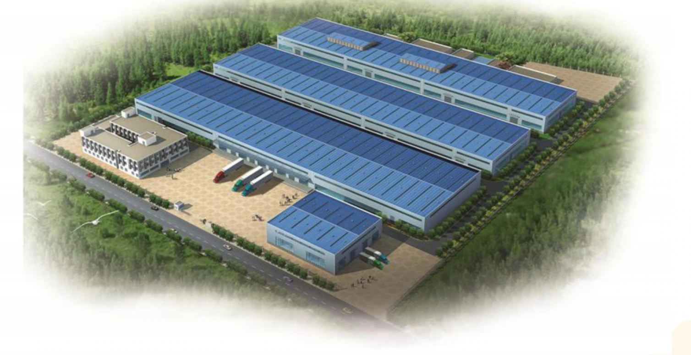

固定资产投入
大邑基地生产面积 4,500 平方米，配置 8 条自动化生产线。
四川省如是欣生物科技有限公司前身为成都豪盛华达纸业有限公司。团队的纸品制造历程始于 1996 年。如今，我们在成都大邑以品牌 OEM 代工为主营业务，同时经营家必备、片片亲和晓宝三个自有品牌。

成都华达生活用纸加工厂成立，开始在成都生产生活用纸。
在成都郫都区成立成都市豪盛华达纸业有限公司。
在大邑县成立成都市苏氏兄弟纸业有限公司。
四川省如是欣生物科技有限公司成立，生产基地落户大邑工业园区。
纸巾与湿巾生产通过 ISO 9001 质量管理体系认证。
涵盖卫生湿巾、婴儿手口湿巾、厨房湿巾与生活用纸。
面向日常清洁与洗护，提供湿巾、洗脸柔巾与棉柔巾。
以婴儿手口湿巾、卫生湿巾及亲肤棉柔巾服务家庭日常护理。
沟通产品用途、材质、每包片数与采购数量。业务联系人为苏宏。